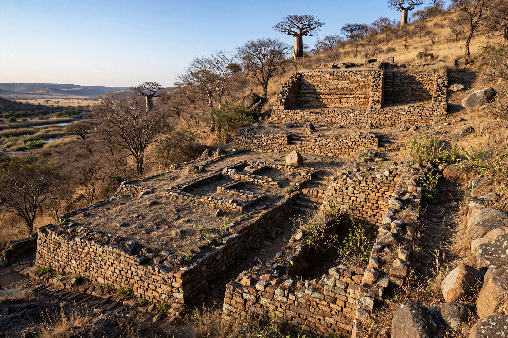

Khami

Khami (also written Khame or Kame) is a ruined city near Bulawayo in western Zimbabwe. It was the capital of the Torwa state, a successor kingdom to Great Zimbabwe, and flourished from about the mid-15th century until its destruction by fire in the 1650s. The site, one of the largest stone ruins in southern Africa, was designated a UNESCO World Heritage Site in 1986.
History
As Great Zimbabwe declined in the 15th century — likely from exhausted resources and shifting gold trade routes — power moved west, and Khami became the capital of the Torwa dynasty (Butwa kingdom). The city participated in trade networks reaching the Indian Ocean coast, receiving imported glass beads, Chinese and Persian ceramics, and European goods from Portuguese traders, in exchange for gold and ivory. Portuguese accounts from the 16th century describe the Torwa ruler's wealth. In the 1650s the city was burned, apparently during the upheavals associated with the rise of the Rozvi state under Changamire Dombo.
Architecture
Unlike Great Zimbabwe's freestanding enclosures, Khami is built as a series of artificially raised platforms and terraces retained by massive decorated stone walls. Its builders developed distinctive masonry ornament: checkered patterns, chevrons, and bands of colored stone in alternating courses. The principal structures occupied the northern hill complex, thought to be the royal precinct, with the so-called Cross Platform — named for a Dominican cross found there — and a conical tower among later additions. The retaining-wall style influenced later Rozvi capitals such as Danamombe.